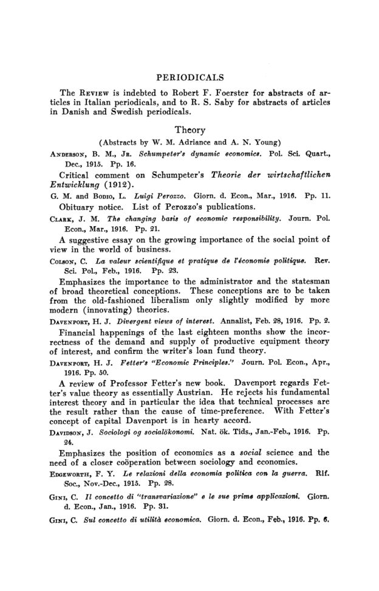

A falácia do imposto capitalizado e o salário decidido por um árbitro
Leitura: 11 min
Adams nega que o comprador de bens tributados compre livre de imposto; Sakolski avalia a terra das ferrovias; Muhse descreve o comércio na China; Compton revê as teorias de salário na arbitragem.


Suponha uma empresa até então isenta que pague dividendos de 5% sobre ações cotadas ao par, e um imposto especial de 10% sobre esses dividendos. O acionista passa a receber 4,5%, e a ação cai para 90, porque ninguém aceita 4,5% quando pode obter 5% em outro investimento. O exemplo é de E. R. A. Seligman, e a conclusão dele é que o novo comprador, que paga 90, compra livre do imposto. T. S. Adams o reproduz na abertura do número de junho de 1916 da American Economic Review para contestar essa conclusão.
O número traz quatro artigos. Adams ataca a ideia de isenção pela capitalização dos impostos. A. M. Sakolski, de Albany, examina como avaliar a faixa de domínio das ferrovias na avaliação federal criada em 1913. Albert C. Muhse descreve como comerciantes estrangeiros controlam a distribuição de seus produtos na China, um mercado sem lei antitruste. Wilson Compton, do Dartmouth College, revê as teorias de salário implícitas na arbitragem industrial. Seguem-se resenhas, documentos, resumos de periódicos, a décima terceira lista de teses de doutorado em andamento e notas.
O comprador de um bem tributado compra livre do imposto?
T. S. Adams · “Tax Exemption Through Tax Capitalization: A Fiscal Fallacy” · pp. 271–287
Adams diz que não. Para ele, salvo o conceito de incremento não ganho, nenhuma ideia tem tanta força na tributação quanto a de que, pela capitalização dos impostos, certas classes ricas escapam regularmente deles. Os slogans eram os títulos isentos, os valores fundiários isentos e os impostos sem ônus. A versão mais radical se aplicava à terra: se cada comprador desconta os impostos no preço, só aumentos periódicos de alíquota alcançariam os proprietários. A minoria do comitê de tributação da cidade de Nova York, que incluía Frederick C. Howe e Lawson Purdy, usou o argumento ao defender a transferência do imposto dos prédios para o valor da terra.
Adams trata a tese como problema de equidade e a julga perversa. O comprador, pela própria hipótese, passa a ganhar o mesmo que outros investidores; não goza de privilégio algum. Levada à risca, a tese pede alíquotas que dobrem a cada troca de mãos até confiscar o valor do bem. E só funciona com surpresa: se o aumento for anunciado, o comprador o desconta, e o ônus acaba passando ao consumidor.
“Não existe ‘isenção pela capitalização’; o que existe é a equalização do ônus pela concorrência.” (“There is no ‘exemption through capitalization’—what there is, is equalization of burden through competition.”)
O erro central, a seu ver, é usar uma taxa de capitalização como se ela não dependesse dos impostos existentes. A taxa resulta de todas as oportunidades de investimento e de todos os impostos conhecidos, e registra o ônus médio. O comprador posterior não compra livre de imposto; compra livre apenas do excesso sobre a média. Adams estende o raciocínio ao incremento não ganho da terra, que se difundiria em impostos sobre terrenos vazios, em ganhos baixos do pioneiro, em fretes e em depreciação não lançada. Admite um argumento formal para tributar aos poucos os títulos que nada pagam diretamente, mas nenhum para elevar o imposto sobre imóveis, que já pagam alíquotas mais altas que outras formas de propriedade.
Quanto vale a terra de uma ferrovia?
A. M. Sakolski (Albany, N. Y.) · “Valuation of Railroad Right-of-Way” · pp. 288–308
A lei federal de avaliação de 1º de março de 1913 mandou a Interstate Commerce Commission apurar, separadamente das benfeitorias, o custo original e o valor atual das terras, da faixa de domínio e dos terminais das ferrovias. O motivo, lembra Sakolski, era o temor de que as empresas usassem a valorização dos terrenos para pedir tarifas mais altas; o senador La Follette disse que o objetivo era decidir o direito das ferrovias de capitalizar o incremento não ganho. A Suprema Corte, nos casos de tarifas de Minnesota, firmou que a terra deve ser avaliada pelo valor atual, mas que o acréscimo sobre o valor das terras vizinhas não pode ser calculado por conjectura.
Sakolski sustenta que a compra de faixa de domínio não é uma simples aquisição de imóvel. A ferrovia precisa de continuidade e de declividade, recorre à desapropriação e paga, além da área, os danos causados ao restante da propriedade cortada. Por isso, aplicar à faixa a expressão valor de mercado, como se ela fosse uma mercadoria intercambiável, lhe parece um erro.
O autor compara os métodos estaduais. O método das vendas, usado em Michigan e Wisconsin, compara transações de terras semelhantes e a relação entre preço e avaliação fiscal; mas as vendas comuns são de lotes grandes, e as compras da ferrovia, de faixas estreitas. Num ramal de Wisconsin, 74 vendas de terras contíguas tinham em média 76 acres; as 116 compras da ferrovia, pouco mais de 3. O método das opiniões, usado em Washington, depende de peritos que divergem conforme o lado que os chama; o método das unidades, de lotes padrão, serve à terra urbana, não à faixa rural. Para Sakolski, médias e multiplicadores são apenas substitutos para aproximar o valor justo, e ele fecha com o juiz Hughes.
“Não é uma questão de fórmulas, mas deve haver um julgamento razoável” (“It is not a matter of formulas, but there must be a reasonable judgment”)
Como se controla um mercado sem lei antitruste?
Albert C. Muhse · “Trade Organization and Trade Control in China” · pp. 309–323
Muhse parte de um fato institucional: a China não tinha leis sobre organização ou controle do comércio, e acordos e combinações podiam ser feitos à vontade por empresas nacionais ou estrangeiras. O governo central não regulava os métodos de negócio, embora controlasse estreitamente o sal, sua principal fonte de receita comercial, cuja produção, transporte e venda cabiam a comerciantes licenciados. Os governos locais interferiam pelo lado tributário, com taxas de barreira como o likin, de alíquotas pouco fixas.
O artigo trata da distribuição de bens estrangeiros. Como nenhum comerciante estrangeiro, salvo os japoneses, chegava diretamente ao consumidor, o atacado nativo era indispensável. O antigo sistema de encomendas, o indent, com preço fixado no padrão-ouro do país exportador, misturava comércio e especulação cambial; depois da revolução de 1911, com a queda do câmbio, muitas consignações ficaram nas mãos dos agentes. Os comerciantes estrangeiros mais ativos passaram a fixar preços em moeda local e a dar a grupos de atacadistas o direito exclusivo de vender em um território, com a obrigação de não vender produtos concorrentes nem invadir outros territórios.
Os grupos costumavam dividir os lucros em cotas, o que reduzia o incentivo a cortar preços dentro deles; contra a invasão de territórios, os fornecedores ajustavam o custo posto em cada praça para que nenhuma tivesse vantagem sobre a outra. Com tarifa de importação de 5% ad valorem, o mercado era aberto à entrada de bens, mas difícil de alcançar sem uma rede de distribuição, e as marcas pioneiras sustentavam monopólios em sabão, óleo, velas, cigarros e máquinas de costura. A ausência de lei de marcas permitia imitações, o que, para Muhse, limitava os lucros. A exceção era o ópio, cuja oferta nos portos de tratado ficara nas mãos de poucos atacadistas. Muhse prevê que um governo central mais forte tente reorganizar o comércio a favor dos comerciantes nacionais.
Que teoria de salário um árbitro aplica?
Wilson Compton (Dartmouth College) · “Wage Theories in Industrial Arbitration” · pp. 324–342
Compton separa as disputas trabalhistas em duas classes, as que envolvem salários e as que envolvem princípios, e só as primeiras admitem a intervenção de um terceiro.
“Um princípio não pode ser arbitrado.” (“A principle can not be arbitrated.”)
Conciliação e mediação, diz, são formas refinadas de negociação coletiva; a arbitragem, no sentido estrito, substitui a barganha pela decisão obrigatória de um terceiro e por isso precisa de algum critério de justiça. A história mostra que nunca houve um. Em 1875, no caso dos mineiros de Northumberland, o árbitro descartou os princípios defendidos pelas partes e decidiu pelo fundo de salários: onde antes havia dez homens, agora havia catorze. Depois vieram a escala móvel, que ligava salários a preços, e o salário vital. Na arbitragem de 1910 entre a Baltimore and Ohio e os sindicatos ferroviários, os sindicatos invocaram ao mesmo tempo custo do serviço, padrão de vida, risco, produtividade e lucros.
O árbitro, observa Compton, não pode isolar a parte do produto imputável ao trabalho, não sabe se a indústria pode pagar, que lucro é justo nem sobre que base calculá-lo, e não prevê se o aumento será repassado aos preços. Na prática, a fórmula mais usada era dividir a diferença. Na Australásia, o tribunal da Commonwealth, com o juiz Higgins, tratou o salário vital como primeiro encargo da indústria. Os resultados, resume, foram rigidez salarial, do contrato para o status, resistência dos empresários marginais e um mínimo que tende a virar salário padrão. Nos doze anos encerrados em 1907, os salários subiram 24%, e os preços dos alimentos, 22,5%.
O raciocínio do salário vital, conclui, é circular: o salário vital depende da posição econômica do trabalhador, que depende do salário que ele vinha recebendo, que depende do valor que o empresário atribui ao seu trabalho. Do ponto de vista estritamente econômico, a doutrina salarial da arbitragem carece de justificação teórica; sua defesa está na política social do momento.
O que mais há na edição?
As resenhas, organizadas por área, incluem Economic Principles, de Frank A. Fetter, por Carroll W. Doten; Economic Origins of Jeffersonian Democracy, de Charles A. Beard, por Charles H. Levermore; Imperial Germany and the Industrial Revolution, de Thorstein Veblen, por Sidney B. Fay; Scientific Management and Labor, de Robert F. Hoxie, por Charles W. Mixter; The Boycott in American Trade Unions, de Leo Wolman, por Harry W. Laidler; e The Wealth and Income of the People of the United States, de Willford I. King, por G. P. Watkins. Os documentos trazem notas sobre um levantamento de administração rural na Pensilvânia, o transporte de petróleo por oleodutos, a negociação coletiva no carvão antracito e a equação de trocas em 1915, por Irving Fisher. A lista de teses inclui Theory of business profits, de Frank H. Knight, em Cornell, e as notas anunciam a décima conferência da National Tax Association, em Indianápolis, de 28 a 31 de agosto de 1916.
Na minha leitura
Na minha leitura, os quatro artigos tratam de um mesmo problema: o que um preço já incorpora. Adams mostra que a taxa de capitalização já contém o ônus médio dos impostos; Sakolski, que o preço pago pela faixa de domínio contém danos de separação que nenhuma média de terras vizinhas capta; Muhse, que o preço do produto estrangeiro na China contém o custo de uma rede de distribuição exclusiva; Compton, que o salário fixado por um árbitro contém uma escolha de critério que a teoria da distribuição não fornece.
Em todos os casos, o erro apontado é tomar um número como dado quando ele é resultado de um equilíbrio que a própria política pretende alterar. É o mesmo raciocínio de equilíbrio geral que hoje se aplica à incidência tributária e à avaliação de ativos regulados.
Glossário
- Capitalização de impostos
- redução do preço de um bem durável no valor presente dos impostos futuros que ele pagará.
- Incremento não ganho
- valorização, sobretudo da terra, que não resulta do trabalho ou do investimento do dono.
- Imposto único (single tax)
- proposta de Henry George de tributar apenas o valor da terra.
- Faixa de domínio
- terra que uma ferrovia possui ou tem direito de usar para seus trilhos e instalações.
- Desapropriação
- aquisição compulsória de propriedade privada pelo poder público, ou por concessionária, mediante indenização.
- Likin
- imposto chinês sobre a circulação interna de mercadorias, cobrado em postos ao longo das rotas.
- Indent
- sistema em que o agente estrangeiro encomendava mercadorias e as mantinha à disposição do comerciante local, que as retirava dentro de um prazo.
- Arbitragem compulsória
- solução de uma disputa trabalhista por decisão de um terceiro, obrigatória para as partes.
- Salário vital
- salário suficiente para as necessidades normais de um trabalhador e de sua família, fixado como piso.
- Escala móvel
- regra que ajusta os salários automaticamente aos preços do produto.
- Fundo de salários
- doutrina segundo a qual o salário médio é dado pela divisão de um fundo fixo pelo número de trabalhadores.
Artigos (4)
- Tax Exemption Through Tax Capitalization: A Fiscal Fallacy — T. S. Adams (pp. 271–287) · resenha acima · comentário completo · JSTOR
- Valuation of Railroad Right-Of-Way — A. M. Sakolski (Albany, N. Y.) (pp. 288–308) · resenha acima · JSTOR
- Trade Organization and Trade Control in China — Albert C. Muhse (pp. 309–323) · resenha acima · JSTOR
- Wage Theories in Industrial Arbitration — Wilson Compton (Dartmouth College) (pp. 324–342) · resenha acima · comentário completo · JSTOR
Resenhas (34)
- Frank A. Fetter, Economic Principles — Carroll W. Doten (pp. 343–346). Primeiro volume de um tratado de princípios; as aplicações, como moeda, bancos e tributação, ficaram para o segundo. JSTOR
- Thomas Nixon Carver, Essays in Social Justice; Jacob H. Hollander, The Abolition of Poverty — Alvin S. Johnson (pp. 347–350). Dois livros de economistas sobre justiça social e pobreza. JSTOR
- Julius Hecker, Russian Sociology — Charles A. Ellwood (pp. 350–351). Estudo sobre a história do pensamento e da teoria sociológica na Rússia. JSTOR
- Charles A. Beard, Economic Origins of Jeffersonian Democracy — Charles H. Levermore (pp. 352–353). Continuação da interpretação econômica da política americana, aplicada aos primeiros partidos. JSTOR
- Thorstein Veblen, Imperial Germany and the Industrial Revolution — Sidney B. Fay (pp. 353–356). Ensaio sobre a Alemanha imperial e a revolução industrial. JSTOR
- Frederic C. Howe, Socialized Germany — O. D. Skelton (pp. 356–358). Livro sobre a organização social alemã, fruto de um quarto de século de estudo. JSTOR
- Adam W. Kirkaldy e Alfred Dudley Evans, The History and Economics of Transport; Edwin A. Pratt, The Rise of Rail-Power in War and Conquest, 1833–1914 — James Bardin (pp. 363–365). Um manual de história e economia dos transportes e um estudo sobre o uso militar das ferrovias. JSTOR
- J. Russell Smith, Commerce and Industry — Thomas Walker Page (pp. 367–368). Livro ilustrado sobre comércio e indústria, de nível elementar. JSTOR
- H. Stanley Jevons, The British Coal Trade — Eliot Jones (pp. 368–369). Estudo sobre o comércio de carvão britânico, cerca de cinquenta anos depois de The Coal Question, de W. S. Jevons. JSTOR
- Paul Clay, Sound Investing; Louis Guenther, Investments and Speculation — Albert W. Atwood (pp. 371–373). Dois livros sobre investimentos e especulação. JSTOR
- Robert Franklin Hoxie, Scientific Management and Labor — Charles W. Mixter (pp. 373–377). Livro baseado na investigação sobre a administração científica e o trabalho feita para a Commission on Industrial Relations. JSTOR
- J. Russell Smith, The Elements of Industrial Management — C. Bertrand Thompson (pp. 377–379). Livro elementar sobre política de negócios e administração industrial, nascido de um curso na Wharton School. JSTOR
- Herbert W. Hess, Productive Advertising — J. R. Turner (pp. 379–380). Manual de publicidade com questões e problemas ao fim de cada capítulo. JSTOR
- H. L. Gantt, Industrial Leadership — C. Bertrand Thompson (pp. 380–382). Conferências da série Page, de 1915, na Sheffield Scientific School. JSTOR
- Paul H. Nystrom, The Economics of Retailing — Paul T. Cherington (pp. 382–385). Livro sobre a economia do comércio varejista. JSTOR
- W. Jethro Brown, The Prevention and Control of Monopolies — M. B. Hammond (pp. 391–392). Livro que propõe o controle público dos preços de monopólio quando a publicidade e a regulação da concorrência não bastam. JSTOR
- Leo Wolman, The Boycott in American Trade Unions — Harry W. Laidler (pp. 393–395). Monografia da série da Johns Hopkins sobre o boicote nos sindicatos americanos. JSTOR
- John H. Ashworth, The Helper and the American Trade Unions — James M. Motley (pp. 395–397). Monografia da série da Johns Hopkins sobre os ajudantes nos sindicatos americanos. JSTOR
- J. W. Schereschewsky e D. H. Tuck, Studies in Vocational Diseases — Emery R. Hayhurst (pp. 397–399). Boletim do Serviço de Saúde Pública sobre a saúde dos trabalhadores e a iluminação nas oficinas do vestuário feminino. JSTOR
- B. L. Hutchins, Women in Modern Industry — Edith Abbott (pp. 399–400). Livro sobre o trabalho das mulheres na indústria moderna. JSTOR
- Women's Educational and Industrial Union, Industrial Home Work in Massachusetts — Sarah S. W. Walden (pp. 400–403). Estudo sobre o trabalho industrial em domicílio em Massachusetts. JSTOR
- Irene Osgood Andrews, The Relation of Irregular Employment to the Living Wage for Women, e outros estudos — Lucile Eaves (pp. 403–404). Estudos sobre o emprego irregular de mulheres, entre eles um preparado para a comissão de investigação de fábricas de Nova York. JSTOR
- Unemployment Survey, 1914–1915; Report of the Ontario Commission on Unemployment; Joseph H. Willits, The Unemployed in Philadelphia — W. M. Leiserson (pp. 405–408). Três relatórios sobre o desemprego, de tipos distintos. JSTOR
- Paul Stanley Collier, Minimum Wage Legislation in Australasia — M. B. Hammond (pp. 408–411). Estudo sobre a legislação de salário mínimo na Australásia, reimpresso do quarto relatório da comissão de investigação de fábricas de Nova York. JSTOR
- Fabian Franklin, Cost of Living — Walter E. Clark (pp. 412–414). Livro sobre a alta do custo de vida. JSTOR
- Walter E. Clark, The Cost of Living — H. J. Harris (pp. 414–416). Livro sobre o custo de vida. JSTOR
- Charles Clifford Huntington, A History of Banking and Currency in Ohio before the Civil War — E. L. Bogart (pp. 416–418). História dos bancos e da moeda em Ohio antes da Guerra Civil. JSTOR
- William F. Spalding, Foreign Exchange and Foreign Bills in Theory and in Practice — E. W. Kemmerer (pp. 418–419). Manual sobre câmbio e letras estrangeiras. JSTOR
- Carl C. Plehn, Government Finance in the United States — Henry B. Gardner (pp. 422–425). Livro sobre as finanças públicas nos Estados Unidos. JSTOR
- Charles Zueblin, American Municipal Progress — D. Hiden Ramsey (pp. 425–426). Nova edição revista de um livro sobre o progresso dos serviços municipais americanos. JSTOR
- Albert H. Leake, Means and Methods of Agricultural Education — E. K. Eyerly (pp. 428–430). Ensaio premiado pela Hart, Schaffner & Marx sobre o ensino agrícola. JSTOR
- Francis H. McLean, The Charities of Springfield, Illinois — Frank D. Watson (pp. 436–438). Levantamento das instituições de caridade de Springfield, parte do Springfield Survey. JSTOR
- Raymond Pearl, Modes of Research in Genetics — Walter M. Adriance (pp. 439–441). Livro sobre o método biométrico e o método experimental na pesquisa genética. JSTOR
- Willford Isbell King, The Wealth and Income of the People of the United States — G. P. Watkins (pp. 441–443). Estudo quantitativo da distribuição da riqueza e da renda nos Estados Unidos. JSTOR
Novos livros (16)
- New Books (pp. 351). Lista de livros novos: obras gerais, teoria e sua história. JSTOR
- New Books (pp. 359–361). Lista de livros novos: história e geografia econômica. JSTOR
- New Books (pp. 361–363). Lista de livros novos: agricultura, mineração, silvicultura e pesca, e indústrias manufatureiras. JSTOR
- New Books (pp. 365–366). Lista de livros novos: transporte e comunicações. JSTOR
- New Books (pp. 369–371). Lista de livros novos: comércio e crises comerciais. JSTOR
- New Books (pp. 385–391). Lista de livros novos: contabilidade, métodos de negócios, investimentos e bolsas. JSTOR
- New Books (pp. 392–393). Lista de livros novos: capital e organização capitalista. JSTOR
- New Books (pp. 411–412). Lista de livros novos: trabalho e organizações de trabalhadores. JSTOR
- New Books (pp. 419–422). Lista de livros novos: moeda, preços, crédito e bancos. JSTOR
- New Books (pp. 426–428). Lista de livros novos: finanças públicas, tributação e tarifa. JSTOR
- New Books (pp. 428). Lista de livros novos: população e migração. JSTOR
- New Books (pp. 430–433). Lista de livros novos: problemas e reformas sociais. JSTOR
- New Books (pp. 433–436). Lista de livros novos: seguros e pensões. JSTOR
- New Books (pp. 438). Lista de livros novos: pauperismo e caridade. JSTOR
- New Books (pp. 438–439). Lista de livros novos: socialismo e empreendimentos cooperativos. JSTOR
- New Books (pp. 443). Lista de livros novos: estatística e seus métodos. JSTOR
Documentos, periódicos e notas (4)
- Documents, Reports, and Legislation (pp. 444–466). Documentos oficiais, com notas assinadas sobre um levantamento de administração rural no condado de Chester, na Pensilvânia (E. A. Goldenweiser), o transporte de petróleo por oleodutos (Ralph E. Heilman), a negociação coletiva no carvão antracito (N. R. Whitney) e a equação de trocas em 1915 (Irving Fisher). JSTOR
- Periodicals (pp. 467–498). Resumos e títulos de artigos de periódicos, por área. JSTOR
- Thirteenth List of Doctoral Dissertations in Political Economy in Progress in American Universities and Colleges (pp. 499–511). Décima terceira lista de teses de doutorado em economia em andamento nas universidades americanas, por área; inclui Theory of business profits, de Frank H. Knight, em Cornell. JSTOR
- Notes (pp. 512–521). Notícias, entre elas a décima conferência da National Tax Association, em Indianápolis, a criação da Economic Psychology Association e a de uma sociedade em Copenhague para estudar as consequências sociais da guerra. JSTOR
Fontes
- Tax Exemption Through Tax Capitalization: A Fiscal Fallacy (pp. 271–287). JSTOR · Internet Archive (PDF)
- Valuation of Railroad Right-Of-Way (pp. 288–308). JSTOR · Internet Archive (PDF)
- Trade Organization and Trade Control in China (pp. 309–323). JSTOR · Internet Archive (PDF)
- Wage Theories in Industrial Arbitration (pp. 324–342). JSTOR · Internet Archive (PDF)
- [untitled] The American Economic Review, (1916-06-01), pages 343-346 (pp. 343–346). JSTOR · Internet Archive (PDF)
- [untitled] The American Economic Review, (1916-06-01), pages 347-350 (pp. 347–350). JSTOR · Internet Archive (PDF)
- [untitled] The American Economic Review, (1916-06-01), pages 350-351 (pp. 350–351). JSTOR · Internet Archive (PDF)
- New Books (pp. 351). JSTOR · Internet Archive (PDF)
- [untitled] The American Economic Review, (1916-06-01), pages 352-353 (pp. 352–353). JSTOR · Internet Archive (PDF)
- [untitled] The American Economic Review, (1916-06-01), pages 353-356 (pp. 353–356). JSTOR · Internet Archive (PDF)
- [untitled] The American Economic Review, (1916-06-01), pages 356-358 (pp. 356–358). JSTOR · Internet Archive (PDF)
- New Books (pp. 359–361). JSTOR · Internet Archive (PDF)
- New Books (pp. 361–363). JSTOR · Internet Archive (PDF)
- [untitled] The American Economic Review, (1916-06-01), pages 363-365 (pp. 363–365). JSTOR · Internet Archive (PDF)
- New Books (pp. 365–366). JSTOR · Internet Archive (PDF)
- [untitled] The American Economic Review, (1916-06-01), pages 367-368 (pp. 367–368). JSTOR · Internet Archive (PDF)
- [untitled] The American Economic Review, (1916-06-01), pages 368-369 (pp. 368–369). JSTOR · Internet Archive (PDF)
- New Books (pp. 369–371). JSTOR · Internet Archive (PDF)
- [untitled] The American Economic Review, (1916-06-01), pages 371-373 (pp. 371–373). JSTOR · Internet Archive (PDF)
- [untitled] The American Economic Review, (1916-06-01), pages 373-377 (pp. 373–377). JSTOR · Internet Archive (PDF)
- [untitled] The American Economic Review, (1916-06-01), pages 377-379 (pp. 377–379). JSTOR · Internet Archive (PDF)
- [untitled] The American Economic Review, (1916-06-01), pages 379-380 (pp. 379–380). JSTOR · Internet Archive (PDF)
- [untitled] The American Economic Review, (1916-06-01), pages 380-382 (pp. 380–382). JSTOR · Internet Archive (PDF)
- [untitled] The American Economic Review, (1916-06-01), pages 382-385 (pp. 382–385). JSTOR · Internet Archive (PDF)
- New Books (pp. 385–391). JSTOR · Internet Archive (PDF)
- [untitled] The American Economic Review, (1916-06-01), pages 391-392 (pp. 391–392). JSTOR · Internet Archive (PDF)
- New Books (pp. 392–393). JSTOR · Internet Archive (PDF)
- [untitled] The American Economic Review, (1916-06-01), pages 393-395 (pp. 393–395). JSTOR · Internet Archive (PDF)
- [untitled] The American Economic Review, (1916-06-01), pages 395-397 (pp. 395–397). JSTOR · Internet Archive (PDF)
- [untitled] The American Economic Review, (1916-06-01), pages 397-399 (pp. 397–399). JSTOR · Internet Archive (PDF)
- [untitled] The American Economic Review, (1916-06-01), pages 399-400 (pp. 399–400). JSTOR · Internet Archive (PDF)
- [untitled] The American Economic Review, (1916-06-01), pages 400-403 (pp. 400–403). JSTOR · Internet Archive (PDF)
- [untitled] The American Economic Review, (1916-06-01), pages 403-404 (pp. 403–404). JSTOR · Internet Archive (PDF)
- [untitled] The American Economic Review, (1916-06-01), pages 405-408 (pp. 405–408). JSTOR · Internet Archive (PDF)
- [untitled] The American Economic Review, (1916-06-01), pages 408-411 (pp. 408–411). JSTOR · Internet Archive (PDF)
- New Books (pp. 411–412). JSTOR · Internet Archive (PDF)
- [untitled] The American Economic Review, (1916-06-01), pages 412-414 (pp. 412–414). JSTOR · Internet Archive (PDF)
- [untitled] The American Economic Review, (1916-06-01), pages 414-416 (pp. 414–416). JSTOR · Internet Archive (PDF)
- [untitled] The American Economic Review, (1916-06-01), pages 416-418 (pp. 416–418). JSTOR · Internet Archive (PDF)
- [untitled] The American Economic Review, (1916-06-01), pages 418-419 (pp. 418–419). JSTOR · Internet Archive (PDF)
- New Books (pp. 419–422). JSTOR · Internet Archive (PDF)
- [untitled] The American Economic Review, (1916-06-01), pages 422-425 (pp. 422–425). JSTOR · Internet Archive (PDF)
- [untitled] The American Economic Review, (1916-06-01), pages 425-426 (pp. 425–426). JSTOR · Internet Archive (PDF)
- New Books (pp. 426–428). JSTOR · Internet Archive (PDF)
- New Books (pp. 428). JSTOR · Internet Archive (PDF)
- [untitled] The American Economic Review, (1916-06-01), pages 428-430 (pp. 428–430). JSTOR · Internet Archive (PDF)
- New Books (pp. 430–433). JSTOR · Internet Archive (PDF)
- New Books (pp. 433–436). JSTOR · Internet Archive (PDF)
- [untitled] The American Economic Review, (1916-06-01), pages 436-438 (pp. 436–438). JSTOR · Internet Archive (PDF)
- New Books (pp. 438). JSTOR · Internet Archive (PDF)
- New Books (pp. 438–439). JSTOR · Internet Archive (PDF)
- [untitled] The American Economic Review, (1916-06-01), pages 439-441 (pp. 439–441). JSTOR · Internet Archive (PDF)
- [untitled] The American Economic Review, (1916-06-01), pages 441-443 (pp. 441–443). JSTOR · Internet Archive (PDF)
- New Books (pp. 443). JSTOR · Internet Archive (PDF)
- Documents, Reports, and Legislation (pp. 444–466). JSTOR · Internet Archive (PDF)
- Periodicals (pp. 467–498). JSTOR · Internet Archive (PDF)
- Thirteenth List of Doctoral Dissertations in Political Economy in Progress in American Universities and Colleges (pp. 499–511). JSTOR · Internet Archive (PDF)
- Notes (pp. 512–521). JSTOR · Internet Archive (PDF)
- Sumário da edição no JSTOR: The American Economic Review, vol. 6, nº 2.
Documento em domínio público (EUA, publicado antes de 1931), via JSTOR Early Journal Content e Internet Archive. Resumo e comentário do autor deste site, sem afiliação com a American Economic Association. Encontrou um erro? Escreva: a correção é publicada no próprio texto, com data.
← Nº 140 · Washington, 1915: o custo da guerra, o orçamento e o paradoxo do Alabama Nº 142 · Manual de 1916: a associação marca encontro em Columbus →